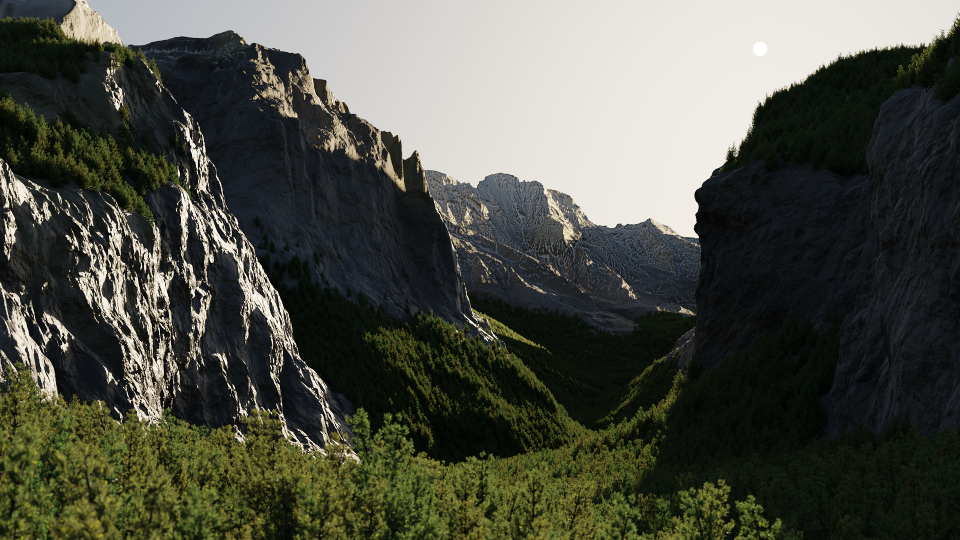
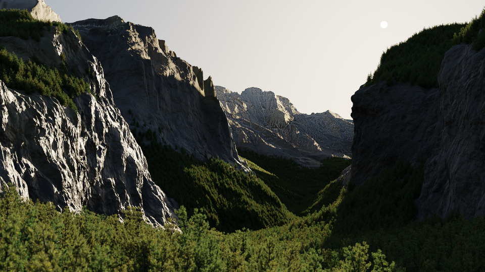
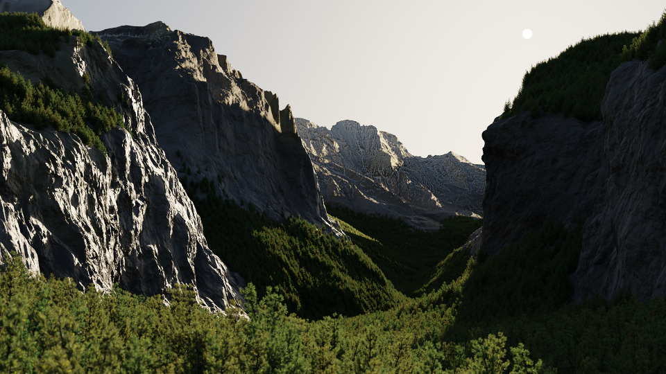

aquaBSD 1.0 Alps.
A general purpose operating system aimed at making everything simply better in every single possible way. For the moment, there isn't much to see here, but tune in on December 25th to watch the 2021 Winter Presentation.
 

A general purpose operating system aimed at making everything simply better in every single possible way. For the moment, there isn't much to see here, but tune in on December 25th to watch the 2021 Winter Presentation.

There's not much to see here at the moment, but stay tuned as this site will soon be updated with some more interesting content!
Video on aquaBSD: https://youtu.be/KB-psq29hU0
Download aquaBSD image as an XZ compressed image file or alternatively as a ZIP file containing the image.
You can run the image in QEMU with:
$ qemu-system-x86_64 -drive file=aquabsd-beta-0621a.img,format=raw
Show OS version:
# uname -a
Poweroff the machine:
# poweroff
List running processes:
# top
Edit a text file (note that you can write in '/tmp/' as it's mounted as a memory disk):
# edit